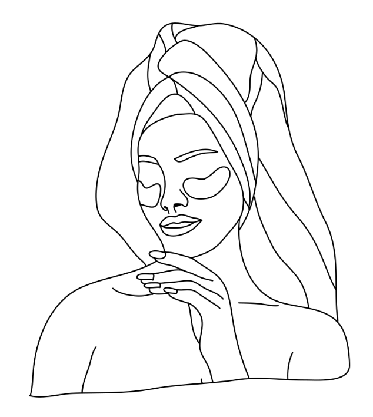

Hello!
Welcome to What the Skin?!, a website to help you learn more about skincare and explore products to give your skin some love.
A little bit about me
My name is Alana Vang and I love everything skincare (even when my skin doesn't cooperate) :)
I've always been one to struggle with acne-prone and dehydrated skin. My skincare journey started out with watching YouTube tutorials and buying whatever product I found at the store in a desperate attempt to help my skin. Many years later, I learned that the products you use depend on your skin type and that I was being too harsh with my skin. I am still learning more about my own skin and how to give it love, but here is what I've learned throughout the years.
My Current Skincare Favorites
Youth to the People Kale and Green Tea Spinach Vitamins Facial Cleanser
This is my current favorite face wash! I've been using this for about 2 years and leaves my face not dried out while feeling clean.
Rating: ⭐ ⭐ ⭐ ⭐ ⭐
Paula's Choice 10% Azelaic Acid Booster
Azelaic Acid is one of my essential skin care products for when I have breakouts or redness. This product has helped tone down the redness of breakouts and quickly clear up small breakouts!
Rating: ⭐ ⭐ ⭐ ⭐ ⭐
Soon Jung Hydro Barrier Cream
I've been using this for 2 years and it is a solid moisturizer that is good for my sensitive skin. It's not too heavy, but it's also very hydrating.
Rating: ⭐ ⭐ ⭐ ⭐
Ordinary Hylaronic Acid 2% and B5
This is a great and affordable Hylaronoic Acid! My skin gets very dehydrated during the winter, so this gives my skin an extra boost of hydration.
Rating: ⭐ ⭐ ⭐ ⭐ ⭐
Supergoop's Unseen Suncreen
This is by far my favorite facial sunscreen out there. The Unsceen Sunscreen leaves no white cast and is great for my sensitive skin (it's also a great makeup primer).
Rating: ⭐ ⭐ ⭐ ⭐ ⭐ ⭐ ⭐ ⭐ ⭐ ⭐